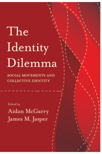

<body bgcolor="#FFFFFF" text="#000000" link="#0000FF" vlink="#CC0000" alink="#CC0000"><center><hr width="350" size="1" align="center" noshade>Are identity politics good or bad for social movements?<hr width="350" size="1" align="center" noshade><p><a href="https://cdcshoppingcart.uchicago.edu/Cart/ChicagoBook.aspx?ISBN=9781439912515&&PRESS=temple" target="_top">Buy this book!</a> | <a href="https://cdcshoppingcart.uchicago.edu/Cart/Cart.aspx?PRESS=temple" target="_top">View Cart</a> | <a href="https://cdcshoppingcart.uchicago.edu/Cart/Cart.aspx?PRESS=temple" target="_top">Check Out</a></p><p></p></center><!--none//--><h1>The Identity Dilemma</h1>
<H2>Social Movements and Collective Identity</H2>
<h3>edited by Aidan McGarry and James M. Jasper</h3>
<P>cloth 1-4399-1251-3 $84.50, May 15, <FONT COLOR=#990033>Available</FONT>
<br>paper 1-4399-1252-1 $29.95, May 15, <FONT COLOR=#990033>Available</FONT>
<br>Electronic Book 1-4399-1253-X $29.95 <FONT COLOR=#990033>Available</FONT>
<BR> 238 pp
6x9
7&nbsp;tables 10&nbsp;figures
</P><BLOCKQUOTE><I>"In </i>The Identity Dilemma<i>, McGarry and Jasper assemble the work of a diverse and talented group of scholars who together shed light on the crucial role of collective identity in contemporary social movements in a range of national settings. Building on recent scholarship that has revolutionized research on social movements in the last decades, this book stands out for its careful attention to the role of emotions in social movements as well as to various dilemmas that militants and movements face. This contribution is a must-read for social scientists interested in stimulating and studying social change."</i> <br>&#151<b>Michele Lamont</b>, Weatherhead Center for International Affairs, Harvard University, and co-editor (with Nissim Mizrachi) of <i>Responses to Stigmatization in Comparative Perspective</i></I></BLOCKQUOTE>
<P>Collective identities are politically necessary, or at least useful, as banners for recruiting others and engaging opponents and the state. However, not every member fits or accepts the label in the same way or to the same degree. <I>The Identity Dilemma</I> provides eight diverse case studies of social movements to show the benefits, risks, and tradeoffs when a group develops a strong sense of collective identity.
<P>The editors and contributors to this pathbreaking volume examine how collective identities can provide powerful advantages but also generate conflicts. The various chapters help to develop our understanding of collective identity from how strategic identities are developed for protest groups to how stigmatized groups negotiate identity dilemmas.
<P>Ultimately, <I>The Identity Dilemma</I> contributes a new strategic approach to understanding social movements that highlights the choices and tensions that groups inevitably face in articulating their ideas and interests.
<P><I>Contributors include: Marian Barnes, Cristina Flesher Fominaya, Umut Korkut, Elzbieta Korolczuk, John Nagle, Clare Saunders, Neil Stammers, Marisa Tramontano, Huub Van Baar, and the editors.</I>
<BR>&nbsp;<h2>Excerpt</h2><P>Excerpt available at <a href="http://www.temple.edu/tempress">www.temple.edu/tempress</a></p>
<BR>&nbsp;<h2>Contents</h2><P>
<p>Introduction: The Identity Dilemma, Social Movements, and Contested Identity � <i>James M. Jasper and Aidan McGarry</i>
<br>1. Scholarly Research on Collective Identities � <i>James M. Jasper, Marisa Tramontano, and Aidan McGarry</i>
<p><b>Part I: Strategic Identities in Protest Movements</b>
<br>2. �Sectarianism: Danger�: Nonsectarian Social Movements and Identity Politics in Divided Societies � <i>John Nagle</i>
<br>3. Autonomous Social Movements and the Paradox of Antiidentitarian Collective Identity � <i>Cristina Flesher Fominaya</i>
<br>4. The Challenges of Using Survey Instruments to Measure the Identities of Environmental Protesters � <i>Clare Saunders</i>
<br>5. Contested Identities in Struggles for Human Rights: A Long View � <i>Neil Stammers</i>
<p><b>Part II: Stigmatized Groups and Collective Identity Dilemmas</b>
<br>6. Survivors, Consumers, or Experts by Experience? Assigned, Chosen, and Contested Identities in the Mental Health Service User Movement � <i>Marian Barnes</i>
<br>7. Enacting Memory and the Hard Labor of Identity Formation: Rethinking the Romani Movement and Its Historiography � <i>Huub van Baar</i>
<br>8. Those Who Are Full Can Never Understand the Hungry: Challenging the Meaning of Infertility in Poland � <i>El&#380;bieta Korolczuk</i>
<br>9. Making the Extreme into the Ordinary: Cultural Legacies and the Identity Work of Hungary�s Right � <i>Umut Korkut</i>
<p>Contributors
<br>Index
</P><BR>&nbsp;<H2>About the Author(s)</H2>
<P><b>Aidan McGarry</b> is a Senior Lecturer in Politics at the University of Brighton, UK. His research focuses on marginalized minority groups and has been published in journals including <i>Ethnicities, Ethnic and Migration Studies</i>, <i>Critical Social Policy</i>, <i>Ethnopolitics</i> and <i>Social Movement Studies</i>.</P>
<P><b>James M. Jasper</b> teaches sociology at the Graduate Center of the City University of New York. His books include <i>Protest: A Cultural Introduction to Social Movements</i> and <i>The Art of Moral Protest: Culture, Biography, and Creativity in Social Movements</i>.</P>
<BR><H2>Subject Categories</H2>
<p><A HREF="/tempress/sociology.html" TARGET="_top">Sociology</a>
<BR><A HREF="/tempress/political.html" TARGET="_top">Political Science and Public Policy</a>
<BR><A HREF="/tempress/social.html" TARGET="_top">Community Organizing and Social Movements</a>
</p>
<BR><h2 class="inpageheading">In the series</H2>
<P><I><a href="http://www.temple.edu/tempress/phsc.html" onMouseOver="window.status='Click for other books in this series!'; return true;" onMouseOut="window.status=''; return true;" target="_top">Politics, History, and Social Change</a></i>, edited by John C. Torpey.
</p><p>This series will disseminate serious works that analyze the social changes that have transformed our world during the twentieth century and beyond. The main topics to be addressed include international migration; human rights; the political uses of history; the past and future of the nation-state; decolonization and the legacy of imperialism; and global inequality. The series will also translate into English outstanding works by scholars writing in other languages.</p>
<p align="center"><a href="https://cdcshoppingcart.uchicago.edu/Cart/ChicagoBook.aspx?ISBN=9781439912515&&PRESS=temple" target="_top">Buy this book!</a> | <a href="https://cdcshoppingcart.uchicago.edu/Cart/Cart.aspx?PRESS=temple" target="_top">View Cart</a> | <a href="https://cdcshoppingcart.uchicago.edu/Cart/Cart.aspx?PRESS=temple" target="_top">Check Out</a></p><p><font face="Arial" size="1"><a href="copyright.html" onMouseOver="window.status='Web Copyright Policy';return true;" onMouseOut="window.status=''" title="Web Copyright Policy">&copy;</a> 2015 <a href="http://www.temple.edu" target="new" onMouseOver="window.status='Link to Temple University home page';return true;" onMouseOut="window.status=''" title="Link to Temple University home page">Temple University</a>. All Rights Reserved. http://www.temple.edu/tempress/titles/2364_reg.html</font></p>